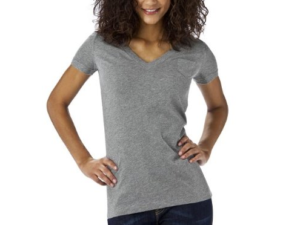

A couple of weeks ago Danielle from elleinadspir.com posted about a tee she wears to workout in and said she LOVED them and owned tons of them. Â So I thought I’d give them a try and I gotta agree! These are the softest tees ever, very lightweight and my absolute favorite tee for workout now. Â Plus, the best thing? They are $8!!

Mossimo Juniors Pocket Tee, Target


Recent Comments